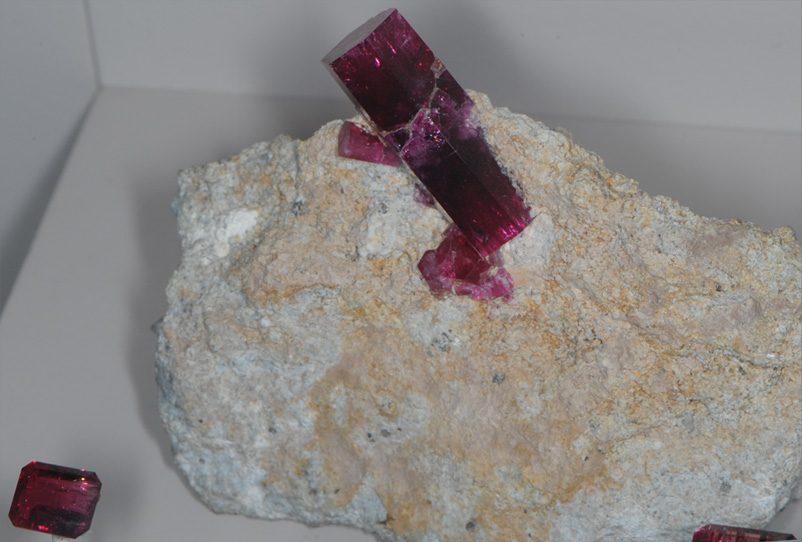
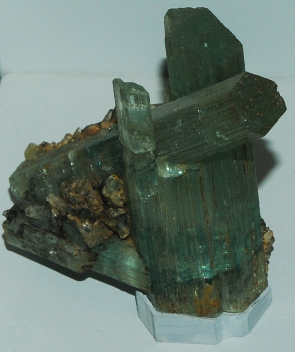
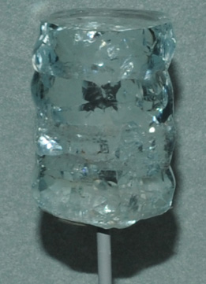
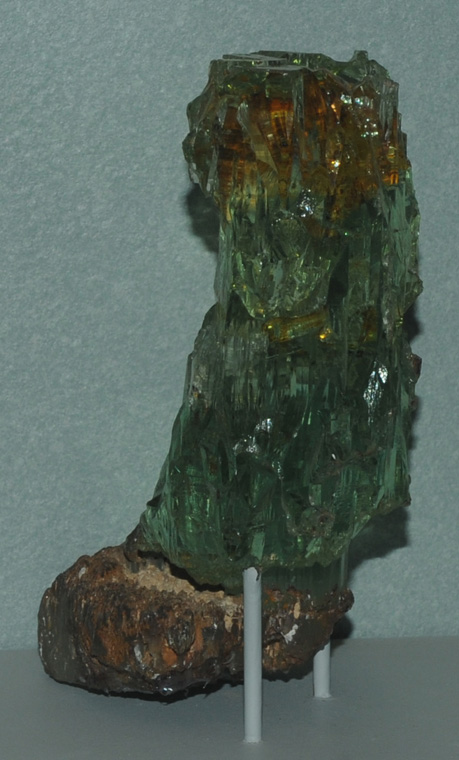
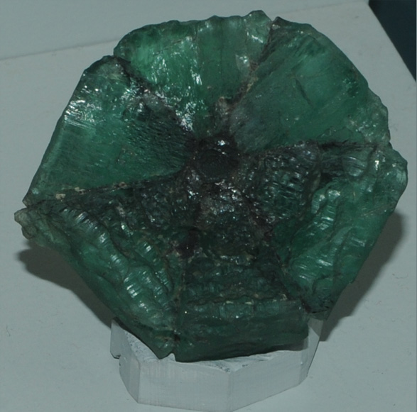
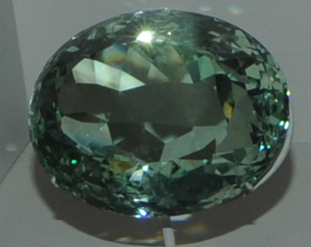
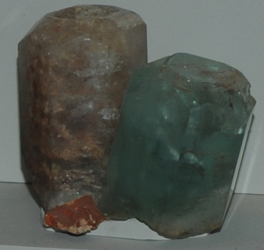
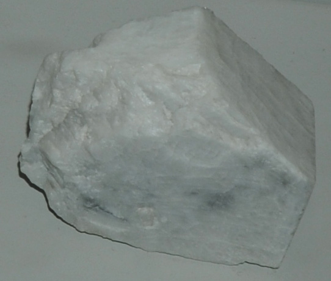

Beryl
Beryl has the chemical composition Be3Al2(SiO3)6 and is classified as a cyclosilicate. It is the principal ore for the element beryllium. It has several gem varieties with inclusions of small amounts of impurities. The inclusion of chromium or vanadium can produce the green emerald. Other varieties are the pale green to blue aquamarine, the pale yellow to yellowish orange heliodor, pale pink to salmon colored morganite, and the colorless gem goshenite. All the samples shown are on display at the Smithsonian Museum of Natural History.

This red beryl crystal is about 5 cm long. Some red beryl gems rival rubies in their brilliance and clarity.
|  |
This beryl sample is described as intergrown crystals. It is from Alabashka, Mursinka, Neyva River, Urals, Russia. It is about 10 cm across. |
|  This clear beryl sample is from Shengus, Gilgit, Northern Areas, Pakistan. It is about 3 cm across.
The sample at right is from Brazil and is about 14 cm high.
|

|
|  |
This sample is described as beryl of variety trapiche', with carbon inclusions. It is about 8cm across and is from Colombia.
|
| 
This green beryl gem is 577.9 caras and is from Teofilo Otoni, Minas Gerais, Brazil. It is about 10 cm across.
|
 A beryl sample from Minas Gerais, Brazil. It is about 12 cm across.
|
| 
|
This white beryl sample is from Tanco pegmatite, Manitoba, Canada. It is about 11 cm across.
|
The largest of the mounted red beryl gems above is about a half centimeter across.
|
Index |